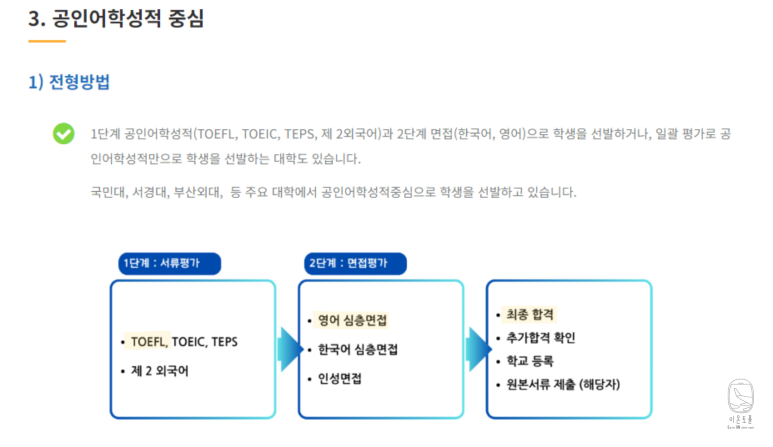
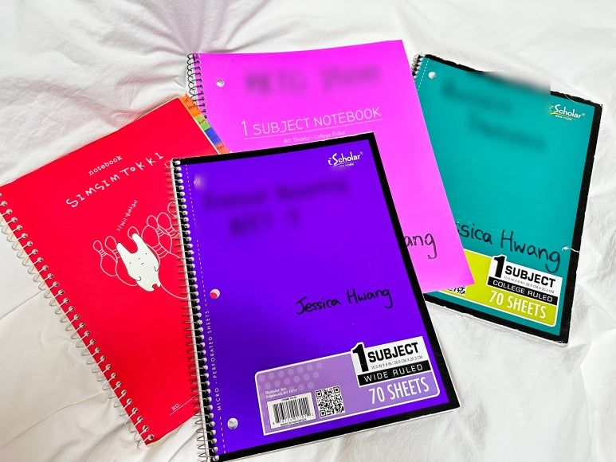
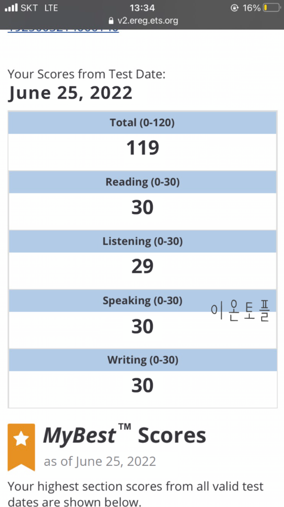
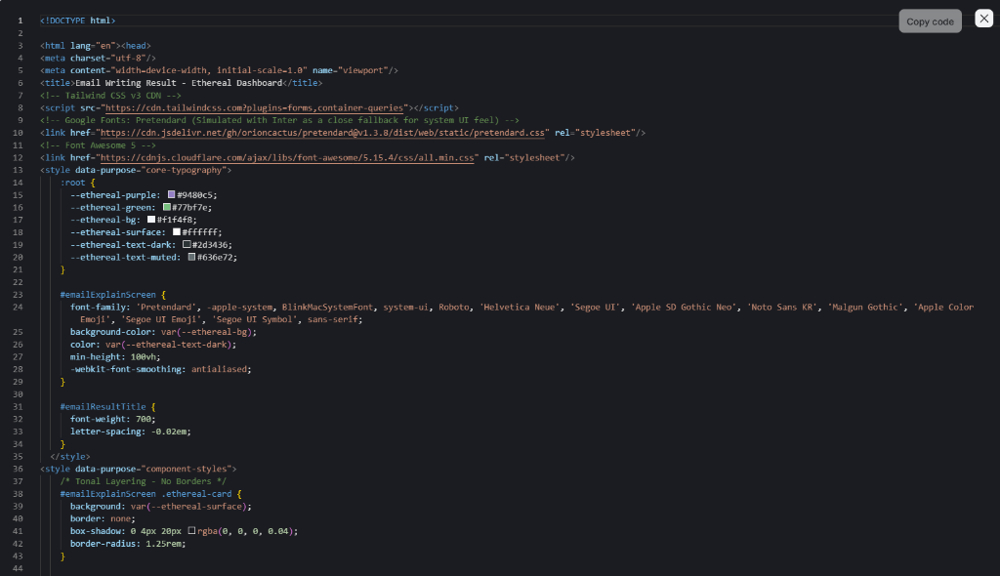
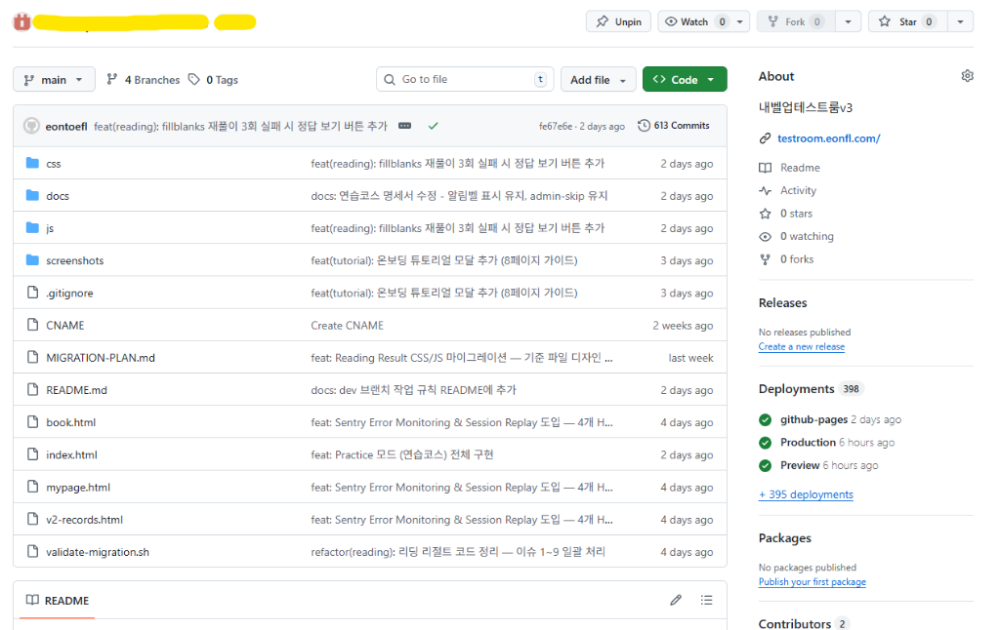
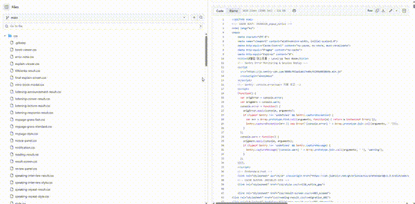
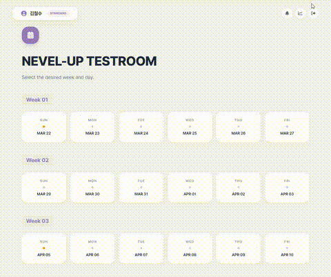
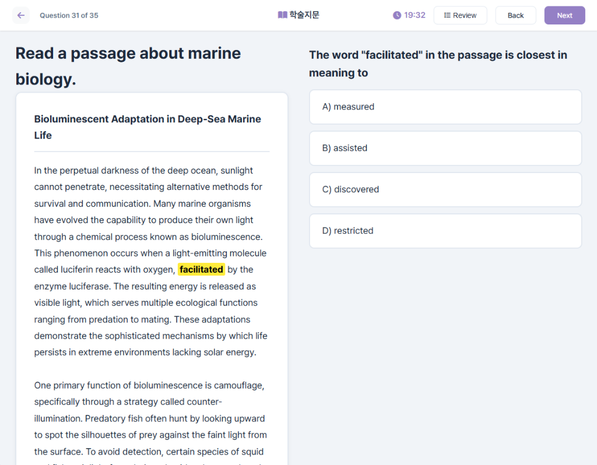
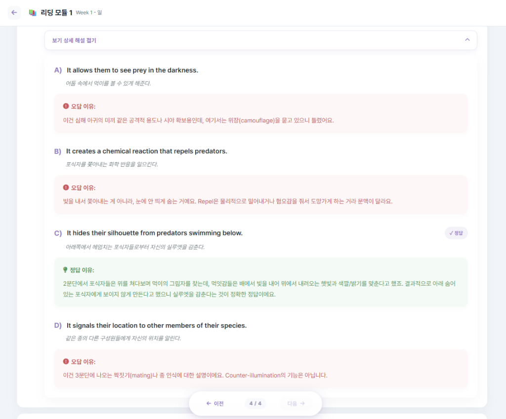
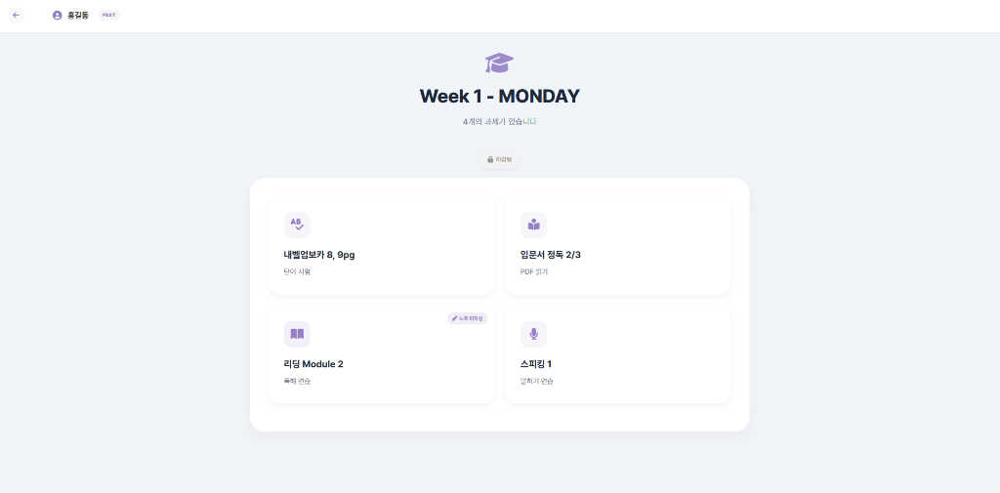

내벨업챌린지
토플, 왜 안 오르는지 아세요?
안녕하세요, 이온입니다.
토플 점수가 안 오르는 분들한테 제가 항상 먼저 여쭤보는 게 있어요.
"지금 어떻게 공부하고 계세요?"
학원 다니고 있다. 인강 듣고 있다. 과외 받고 있다.
교재도 바꿔봤고, 선생님도 바꿔봤다.
근데 점수는 그대로라고 하세요.
많이 바꿨는데 결과가 똑같다면,
바뀌지 않은 게 하나 있는 거예요.
누가 설명해주면 내가 이해하고,
그러면 점수가 오른다 — 이 전제요.
토플은 누군가의 설명을 잘 듣는 시험이 아닙니다.
컴퓨터 앞에서 혼자 읽고, 듣고, 쓰고, 말하는 시험이에요.
연습도 그렇게 해야 하지 않을까요.
내벨업챌린지는 거기서 출발한 프로그램입니다.
토종 한국인 이온,
74점에서 119점까지
2011년, 저는 내신도 수능도 바닥이었어요.
영어특기자 전형을 알게 되면서 토플에 매달리게 됐습니다.

당시 영어특기자 전형
학원 다녔고, 과외도 받았고, 시키는 건 다 했어요.
결과는 74점.
포기 직전까지 갔습니다.
근데 하나가 계속 걸렸어요.
열심히 한 건 맞는데, 제대로 한 건 맞나?
그 뒤로 학원도 과외도 끊고, ETS가 공개한 채점기준, 기출, 모범답안을 직접 찾아 읽었어요.
중국·인도·아랍권 토플 사이트까지 뒤졌습니다.

실제 분석하면서 정리한 노트들
학원에서 가르쳐준것과는 솔직히 많이 달랐습니다.
3년 뒤에 119점을 받았습니다. 순수 독학으로요.
이후에 용돈벌이 토플과외를 시작했는데,
제가 겪은 시행착오들 중 가장 확실한것들로 가르치기 시작했더니, 학생들 점수가 올라가기 시작했어요.
거기서 하나씩 정리하다 보니
지금의 내벨업챌린지가 됐습니다.

74 → 119
2026년 1월 이전에는 토플은 120점 만점이었습니다
이 사이트, 제가 직접 만들었습니다
이온토플에는 동업자가 없어요. 직원도 없습니다.
교재, 해설, 커리큘럼, 주간체크, 진단서. 전부 저 혼자 합니다.
지금 보고 계신 이 사이트도요.
학생들이 매일 접속해서 문제 풀고, 채점받고, 해설 보고, 오답노트 쓰는 이 테스트룸 사이트도.
제가 직접 만들었어요.
"원래 개발자였냐구요?"
단 한번도 코딩 배운 적 없습니다. 코자도 몰랐어요.
근데 학생들한테 필요한 환경을 밖에서 찾을 수가 없었어요.
제가 원하는 방식으로 돌아가는 프로그램이 어디에도 없었거든요.
그래서 직접 만들기로 했습니다.
6개월 동안 하루에 4시간만 자면서 코딩을 독학했어요.
그렇게 만든 게 지금 이 사이트, 그리고 테스트룸입니다.
어떤 수업도 듣지 않았고 100% 독학했습니다.

직접 작성한 소스코드

613개의 커밋이 쌓인 GitHub 저장소

실제 직접 작성한 파일들
74점에서 119점까지도 그랬고, 이 사이트를 만든 것도 그렇고,
필요해서 직접 만들었고, 또 필요한것이 있다면 그것도 그냥 제가 직접 할겁니다.
그게 제가 토플을 대하는 방식이고,
학생들한테 요구하는 방식이기도 합니다.

최적의 순서와 양을 고려한 매일 스케줄

실제 토플과 동일한 풀이 환경

문장 해석·단어·보기별 해설까지 전부
전부 제가 만든겁니다.
강의는 없습니다
매일 정해진 스케줄에 따라 직접 풀고, 직접 정리합니다.
내벨업챌린지에는 수업 영상이 없어요.
선생님이 화면에 나와서 문제를 풀어주지 않습니다.
대신 매일 스케줄이 정해져 있고, 실제 토플과 동일한 환경에서 직접 문제를 풀어요.
시간 제한이 있고, 끝나면 자동 채점되고, 채점이 끝나야 해설이 열립니다.
해설을 읽으면서 오답노트를 직접 쓰고요.
Fast(4주)와 Standard(8주) 두 과정이 있어요.
총 분량은 같고, 하루에 많이 하느냐 나눠서 하느냐 차이입니다.
단어, 입문서, 리딩, 리스닝, 라이팅, 스피킹.. 전부 커버합니다.

로그인하면 보이는 오늘의 스케줄. 리딩, 리스닝, 라이팅, 스피킹, 단어 — 매일 할 일이 정해져 있습니다.
매일 이 순서를 반복합니다.
종이 교재로 토플 공부하시면 안 됩니다.
토플 시험은 컴퓨터 화면에서 치러요.
마우스로 클릭하고, 키보드로 치고, 이어폰으로 듣고, 마이크에 대고 말하는 시험이에요.
종이에 밑줄 긋고 필기하는 연습은
시험장에서 전혀 다른 감각을 요구받는 순간 무너집니다.
제가 100% 컴퓨터 환경을 고집하는 이유예요.
리딩: 35문제, 20분. 화면에서 자유 이동.
리스닝: 오디오 1회 재생. 되돌아가기 불가. 문제별 개별 타이머.
스피킹: 시작하면 끝까지 자동 진행. 멈출 수 없습니다.
해설만으로 공부가 되냐는
질문에 대해
이 질문을 많이 받아요.
근데 수강생 후기에서 가장 많이 나오는 단어가 "해설"이에요.
해설이 너무 자세하다, 강의보다 낫다. 이런 말이 계속 나옵니다.
실제로 어떻게 생겼냐면요.
지문의 모든 문장에 한국어 해석이 붙어 있어요.
단어를 클릭하면 뜻과 설명이 팝업으로 나오고, 보기 하나하나에 대해 왜 맞고 왜 틀린지 전부 풀어져 있습니다.
저는 이 해설을 만드는 데 시간을 가장 많이 써요.
학생이 혼자 읽고 혼자 이해할 수 있어야 하니까요.
그리고 해설을 봤다고 끝이 아니에요.
같은 문제를 해설 없이 다시 풀 수 있습니다.
바로 정답이랑 해설부터 보면
거기에 의존하는 습관이 생겨요.
누가 설명해줘야 이해하는 구조에서
영원히 못 빠져나와요.
스스로 정답까지 도달하는 과정을 겪어봐야
그게 진짜 실력이 되거든요.
그래서 먼저 다시 풀고, 충분히 생각한 다음에
해설을 보도록 유도하고 있어요.
왜 틀렸는지 자기 말로 정리해야 내 걸로 남아요.
여기서도 대신 해주는 건 없습니다.
해설을 읽고, 틀린 이유를 자기 말로 정리합니다. 이 과정이 빠지면 해설을 읽은 의미가 절반으로 줄어요.
혼자서 매일 할 수 있을까
싶은 분들한테
의지만으로는 어렵다고 저도 생각해요. 그러면 강제해야죠.
마감&인증률
매일 마감 시간이라는 타임리밋이 있고, 실시간으로 공부를 할때마다 내 눈앞에서 인증률이 올라갑니다.
보증금
수강료와 별도로 10만원. 인증률에따라 돌려드려요. 10만원 모두 돌려받을 수도, 전혀 돌려받지 못할 수도 있습니다.
주간체크
매주 제출한 과제를 하나하나 확인하고, 분석과 코멘트를 보내드려요.
제가 직접 확인
리딩·리스닝 결과, 라이팅 원문, 스피킹 녹음, 오답노트. 했냐 안 했냐가 아니라 어떻게 했냐까지 봅니다.
매일 초록 칸이 채워집니다. 빨간 칸이 하나 생기면 보기 싫어서라도 다음 날은 하게 돼요.
리딩·리스닝 레벨이 주차별로 어떻게 변하는지 직접 볼 수 있어요.
제 말보다
직접 해본 분들 말을 보세요
10명 중 8.5명이 목표점수 달성 또는 점수 상승.
심사해서 받은 학생들 기준이에요.
이런 분들은 맞지 않아요
기본적인 자기소개나 길 설명 조차 영어로 안 되시는 분은
아직 이 프로그램에 적합하지 않아요.
현실적으로 목표 기간 안에 달성이 어렵다고 판단되면 거절합니다.
신청 게시판에 [승인불가] 표시가 적지 않아요.
안 되는 걸 알면서 수강료 받고 서로 스트레스 받기보단,
정중하게 거절하고, 될 분들께 집중합니다.
신청하면 바로 결제가 아닙니다
신청서를 내시면 제가 먼저 개별분석을 만들어 드려요.
한 시간 넘게 걸립니다.
현재 점수 분석, 공부 방식의 문제점, 목표의 현실성, 구체적인 플랜, 최종 승인 여부.
모든 신청자에게 무료입니다.
시험료 지원금 21만원도 있어요.
31.5만원짜리 시험을 16만원에 볼 수 있습니다.
바로 신청하지 마세요
저는 아무 글도 안 읽고 신청하시는 분을 오히려 말리고 싶어요.
실제로 승인거부도 많이 되구요.
블로그에 무료 글이 많이 올라와 있어요. 후기도 쌓여 있고요.
그거 먼저 읽어보세요.
그것만으로 공부 방향이 바뀌는 분들이 정말 많습니다.
다 읽어보시고, 공부방식을 바꿔보시는 것만으로도
점수가 오를 수 있습니다.
스라첨삭
준비중입니다
Speaking & Writing 첨삭 프로그램
4월중 오픈 예정